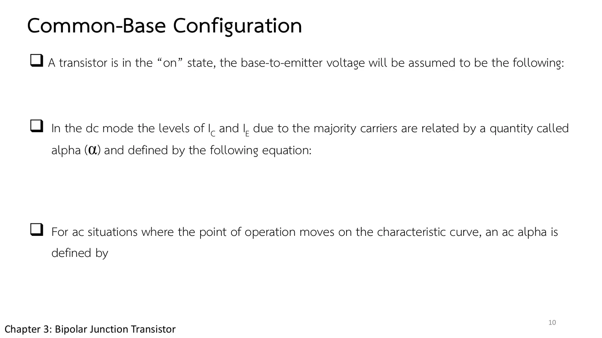

A transistor has three terminals, but an amplifier needs an input and an output, so one terminal has to serve both. The first configuration makes the base the shared one, and a surprise waits there: the output current is always smaller than the input current, yet the voltage can be amplified hundreds of times. This page has a common-base circuit, npn or pnp, whose \(V_{EE}\) and \(V_{CC}\) you can change, on the characteristics of Figs. 3.7–3.8 (section A), then reads the characteristics in Example 3.1, finds the dc and ac alpha (α), and works out how a common-base stage amplifies voltage (problems 1–3), followed by more practice (chapter 3 slides, pp. 8–10; Boylestad section 3.4).
The arrow of the symbol shows the direction of the emitter current (conventional flow): out for npn ("not pointing in"), in for pnp ("pointing in"); the supplies are then put in with polarities that drive that current (slide p. 8, Fig. 3.11).
Three regions: active (base–emitter forward-biased, collector–base reverse-biased; used for amplification), cutoff (both reverse-biased; \(I_C\) is only \(I_{CBO}\)) and saturation (both forward-biased; left of \(V_{CB}\) = 0) (slide p. 9).
In the active region \(I_C \cong I_E\), almost regardless of \(V_{CB}\). The input behaves like a diode, and once the transistor is on, \(V_{BE} \cong 0.7\) V (slide p. 10, Eqs. 3.3–3.4).
Alpha: \(\alpha_{dc} = I_C/I_E\) (about 0.90–0.998); with the leakage, \(I_C = \alpha I_E + I_{CBO}\); the ac alpha \(\alpha_{ac} = \Delta I_C/\Delta I_E\) at a fixed \(V_{CB}\) is close to \(\alpha_{dc}\) (slide p. 10).
Voltage gain: the same current is moved from a low-resistance input to a high-resistance output (transfer + resistor), so the voltage is amplified hundreds of times although \(I_C/I_E\) is below 1.
ตอนที่ 1 · ขาไหนเป็นขาร่วม
Part 1 · Which terminal is shared
วงจรเบสร่วม: ลูกศรบอกทิศของกระแส
Common base: the arrow tells the current direction
A transistor has three terminals, but a circuit has an input and an output with two terminals each, so one terminal must be shared. Slide p. 8 starts with the base as the shared terminal: the signal goes in at the emitter and out at the collector, and the base is usually at, or closest to, ground potential. Hence the name common base.
The boxed sentence on the slide is the key to connecting any configuration: the arrow of the symbol shows the direction of the conventional emitter current, pointing out for an npn and in for a pnp. Once the current direction is known, the supplies go in with the polarities that drive current that way.
สไลด์บทที่ 3 หน้า 8: สัญกรณ์ของวงจรเบสร่วม · แตะรูปเพื่อขยายChapter 3 slide p. 8: common-base notation · tap to enlarge
Slide p. 9 is the map of the output side, \(I_C\) against \(V_{CB}\) for several values of \(I_E\): in the active region (base–emitter forward-biased, collector–base reverse-biased) the lines are flat and \(I_C\) is almost equal to \(I_E\), left of \(V_{CB}\) = 0 lies saturation, and along the axis cutoff. Slide p. 10 adds the numbers to calculate with: a conducting transistor has \(V_{BE} \cong 0.7\) V, and the ratio \(I_C/I_E\) is called alpha (α). Lower \(V_{CC}\) until the operating point Q enters the red strip and see whether \(I_C\) still follows \(I_E\).
สไลด์หน้า 9: ลักษณะสมบัติด้านออกและสามย่าน · แตะรูปเพื่อขยายSlide p. 9: the output characteristics and the three regions · tap to enlarge

สไลด์หน้า 10: \(V_{BE}\) และแอลฟา (สมการหายไป) · แตะรูปเพื่อขยายSlide p. 10: \(V_{BE}\) and alpha (equations missing) · tap to enlarge
Slide p. 10 has no equations, only the sentences leading to \(V_{BE} \cong 0.7\) V, \(\alpha_{dc} = I_C/I_E\) and \(\alpha_{ac}\) (Eqs. 3.4, 3.5 and 3.7 of the book); this page writes them in the box above and in problems 1–2.
The emitter on the left is fed by \(V_{EE}\) through \(R_E\) = 1 kΩ (the input), the collector on the right by \(V_{CC}\) through \(R_C\) (the output), and the base is grounded. The supply polarities follow Fig. 3.6: pnp and npn are opposite. The simulated transistor uses the input characteristics read off Fig. 3.7 and α = 0.995. The pink line is the output load line \(V_{CB} = V_{CC} - I_CR_C\). Lower \(V_{CC}\) until Q enters the red strip (saturation) and see \(I_C\) fall although \(I_E\) stays (for a pnp the graphs use the magnitudes of the voltages).
1
Example 3.1: อ่านลักษณะสมบัติของวงจรเบสร่วม
Example 3.1: reading the common-base characteristics
Boylestad Example 3.1 (รูป 3.7, 3.8, 3.10c)
Boylestad Example 3.1 (Figs. 3.7, 3.8, 3.10c)
โจทย์
(a) ใช้ลักษณะสมบัติของรูป 3.8 จงหา \(I_C\) เมื่อ \(I_E\) = 3 mA และ \(V_{CB}\) = 10 V (b) \(I_E\) ยังเป็น 3 mA แต่ลด \(V_{CB}\) เหลือ 2 V จงหา \(I_C\) (c) ใช้รูป 3.7 และ 3.8 จงหา \(V_{BE}\) เมื่อ \(I_C\) = 4 mA และ \(V_{CB}\) = 20 V (d) ทำข้อ (c) ซ้ำโดยใช้รูป 3.8 และ 3.10c
Problem
(a) Using the characteristics of Fig. 3.8, determine \(I_C\) if \(I_E\) = 3 mA and \(V_{CB}\) = 10 V. (b) \(I_E\) remains 3 mA but \(V_{CB}\) is reduced to 2 V: determine \(I_C\). (c) Using Figs. 3.7 and 3.8, determine \(V_{BE}\) if \(I_C\) = 4 mA and \(V_{CB}\) = 20 V. (d) Repeat (c) using Figs. 3.8 and 3.10c.
The simulation sets \(I_E\) with a current source and \(V_{CB}\) with a voltage source; in (c) \(I_E\) is set so that \(I_C\) is exactly 4 mA. Try it first.
Problem 2 has just confirmed that \(I_C\) is always smaller than \(I_E\), so a common-base stage cannot amplify current. How, then, did the transistor earn its place as an amplifier?
The answer hides in its name: transistor comes from transfer + resistor. Nearly the same current is transferred from the input, a forward-biased junction of very low resistance, to flow through a high-resistance load on the output side, so the output voltage can be hundreds of times the input voltage. Before opening problem 3, estimate how many times larger 5 kΩ is than 20 Ω.
"Transistor Amplifying Action" is on the contents slide (p. 2) but has no slide, and the 11th edition dropped the section; problem 3 of this page uses the example of earlier editions.
A common-base stage in its ac model (the dc biasing left out): input voltage \(V_i\) = 200 mV, input resistance \(R_i\) = 20 Ω, load R = 5 kΩ and \(\alpha_{ac}\) = 1. Find \(I_i\), \(I_L\), \(V_L\) and the voltage amplification \(A_v\).
The simulation draws the transistor as its model: the input is the low resistance \(R_i\) of the forward-biased junction, the output the current source \(\alpha I_i\) of the reverse-biased one, both sharing the base (ground). Try it first.
In section A set \(V_{EE}\) = 0: the base–emitter junction is not forward-biased, \(I_E\) = 0 and \(I_C\) is zero (cutoff).
Raise \(V_{EE}\): \(I_E \approx (V_{EE} - 0.7)/R_E\) and \(I_C\) follows \(I_E\) at once, whatever \(V_{CC}\) is, as long as \(V_{CB}\) is not negative (active region).
Lower \(V_{CC}\) or pick a larger \(R_C\): once \(V_{CB}\) is below about −0.5 V the collector–base junction is forward-biased too; \(I_C\) falls and the rest of \(I_E\) leaves by the base (saturation).
Try this 2 — npn and pnp
Switch to pnp: the polarities of \(V_{EE}\) and \(V_{CC}\) turn round and so do the moving dots, but every current has the same size.
Problem 3: what would the voltage gain be with \(R_i\) = 100 Ω, the top of the range? (Answer: 50.)
Chapter 3 slides pp. 2, 8–10 · Boylestad & Nashelsky, 11th ed., section 3.4 (Example 3.1, Figs. 3.6–3.11, end-of-chapter problems 11–15), and the "Transistor amplifying action" section of earlier editions
![Chapter 3 slide 8, Common-Base Configuration: the common-base terminology is derived from the fact that the base is common to both the input and output sides of the configuration; the base is usually the terminal closest to, or at, ground potential. Quote: the arrow in the graphic symbol defines the direction of emitter current (conventional flow) through the device. Figures: a p-n-p block with I_E into the emitter, I_C out of the collector and I_B out of the base to ground, with a large arrow to the right, and its symbol; an n-p-n block with all currents the other way, with a large arrow to the left, and its symbol.](slides/ch3/p08.webp)
![Chapter 3 slide 9, Common-Base Configuration: the output set will relate an output current (I_C) to an output voltage (V_CB) for various levels of input current (I_E) as shown in the figure. Quotes: in the active region the collector-base junction is reverse-biased, while the base-emitter junction is forward-biased; in the cutoff region the collector-base and base-emitter junctions of a transistor are both reverse-biased; in the saturation region the collector-base and base-emitter junctions are forward-biased. Figure: I_C (mA) against V_CB from −1 to 20 V for I_E = 0 to 7 mA, flat lines in the unshaded active region, the shaded saturation region left of 0 V, and the cutoff region along the axis.](slides/ch3/p09.webp)